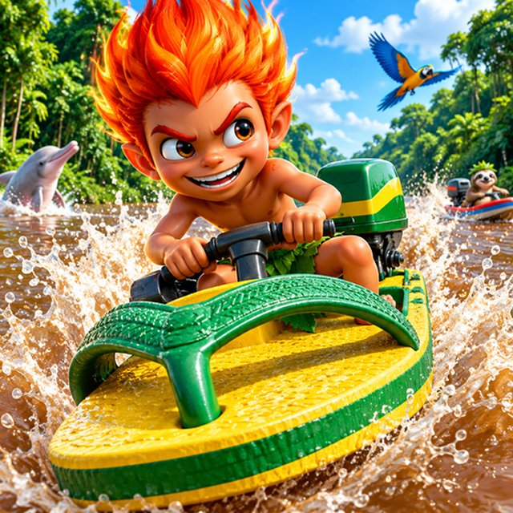

BANZUM

Corrida de barco pelos rios da Amazônia, com as lendas do Norte: Curupira, Iara, Boto, Matinta Perera, Mapinguari, Mulher-Cobra, Caipora e Boi-bumbá.
Porto Velho, Rio Branco e Manaus, com a correnteza, as quedas e os marcos de cada cidade.
Em breve no Android